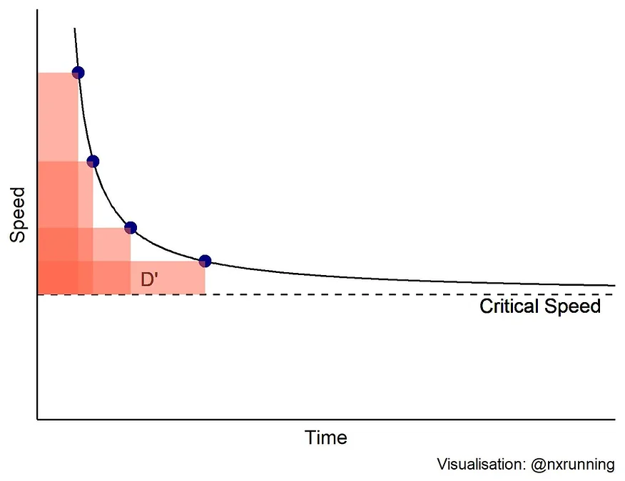
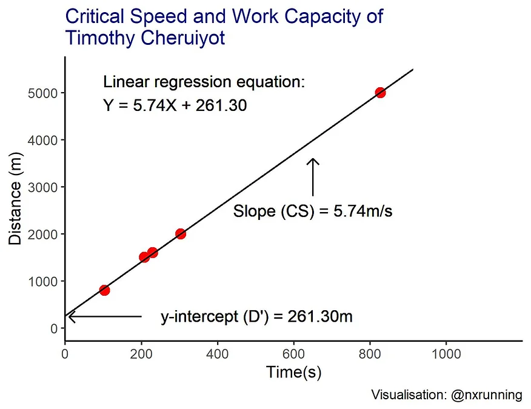
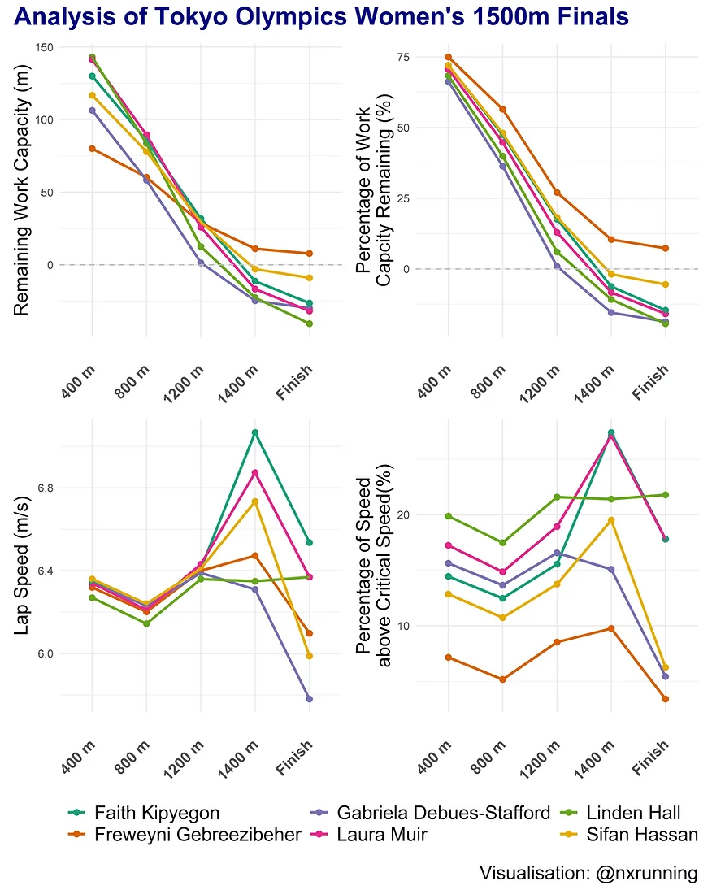
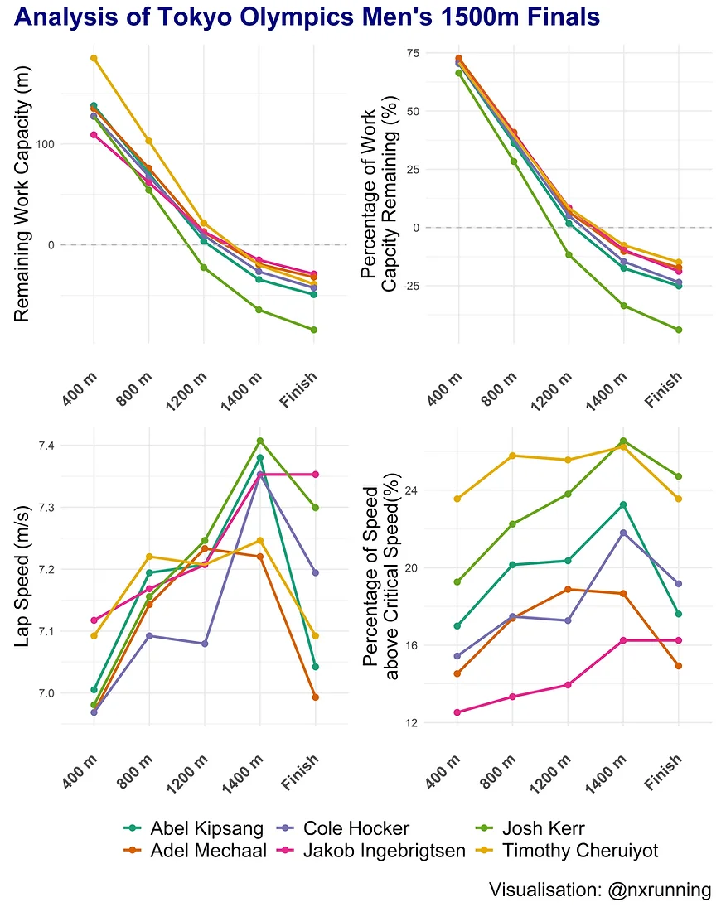

Tokyo Olympics: Analysis of the 1500m Event’s Pacing Strategy using the Concept of Critical Speed
The 1500m event is a demanding middle-distance race in which athletes have to sustain high-intensity efforts over prolonged periods. This blog post employs the concept of critical speed to analyse the pacing strategy in the men’s and women’s 1500m finals at the Tokyo Olympics 2020.

Introduction
Energy output during prolonged cardiorespiratory exercise is produced from a spectrum of both the aerobic (oxidative) and anaerobic (glycolytic) energy systems. The proportion of contribution from either system is often dependent on the exercise intensity levels. Given that venturing into the anaerobic territories is typically associated with fatigue, it has been of interest to scientists, coaches, and athletes to find the optimal exercise intensity to meet the demands of sporting performances.
Numerous concepts have been established in sports science to try identifying key levels of exercise intensity to predict fatigue and performance. One such concept often used in the world of cycling is the concept of critical power. In layman terms, critical power represents the highest power output that can be sustained for a prolonged period (approximately 30-60 minutes). It has been purported to be a key ‘threshold’ that distinguishes between the heavy and severe intensity domains. The latter domain is characterised by rapid increase in oxygen uptake and blood lactate, and the inability to reach steady states. Any intensity beyond the critical power level will result in the athlete tapping significantly into his or her finite anaerobic capacity. Continuous exercise at such high intensity levels will result in inevitably imminent fatigue.
The concept of critical power is relevant to any sporting performances in which athletes have to exercise in the severe intensity domain. A good applicable example in the athletics will be the 1500m event, which requires significant energy contribution from the anaerobic system. In the context of running, the same concept is termed critical speed instead since running is more pertinent to speed than power output. An interesting application of this concept is predicting the time to exhaustion when running beyond the critical speed using the following equation.
Time to exhaustion = D’/ (S – CS)
The concept proposes that when one runs at a given speed (S) above the critical speed (CS), the ability to sustain that speed is limited by the individual’s work capacity (D’). For example, a runner has a CS of 5 m/s and D’ of 200m. If this runner attempts to run at a speed of 7 m/s, it is expected that he or she will reach exhaustion in 100 seconds (as calculated by 200/ (7-5) = 100).

Calculation of Critical Speed (CS) and Work Capacity (D’)
Critical speed (CS) can be computed using the personal records of an individual over different running distances. As illustrated in the figure above, we plot the average speed of one’s best performances against their respective time duration. We will derive a hyperbolic relationship between speed and time. On the left side of the curve, we observe an initial steep decline in the speed that we can sustain as the time duration increases. However, the rate of decline slows and beyond a certain point, any increase in time duration corresponds to minimal changes in the speed. The curve eventually approximates the dotted line, termed the asymptote, which represents the CS. In addition, we can also derive one’s work capacity (D’) from the curve, as denoted by the shaded areas.
Given that it requires some effort to interpret a hyperbolic curve, an easier and commonly used method to calculate CS and D’ is to plot the total work done (distance of event) against the time duration, which has a linear relationship. Next, we fit a linear regression line to the values and interpret the values from the straight-line equation. The slope or gradient of the line represents CS, while the y-intercept represents D’. The figure below illustrates an example of this method to calculate the CS and D’ of Timothy Cheruiyot, who is currently first ranking in the men’s 1500m event. I plotted his personal best records between 800-5000m (data from IAAF database) and derived the linear regression equation based on these values. The slope of the equation informs us that his CS is 5.74 m/s, and the y-intercept informs us that his D’ is 261.30 metres.

Application of the critical speed concept to pacing
In the recent American College of Sports Medicine 2021 Annual Meeting, a research study demonstrated that 1-mile (1600m) world record performances were ran above CS with complete depletion of D’ at the finish line. Since running 1500m is likely akin to running a mile, it is interesting to find out how 1500m event athletes paced themselves in respect to their CS and D’. This blog post examined the pacing profiles of both male and female runners who competed in the 1500m finals at the Tokyo Olympics, whereby runners fought for podium positions instead of world records.
I adopted the same approach as the research study to calculate the CS and D’ of all the athletes. Data of individual personal best performances between 800-5000m were extracted from the IAAF database, and the linear regression method was used to derive the CS and D’. Given that very old records may not reflect the athlete’s current fitness level accurately, personal bests achieved before 2014 were excluded from the calculation.
| Tokyo Olympics 1500m Finalists | |||||
| Critical Speed (m/s) |
Work Capacity (m) |
Result | Average Speed (m/s) |
Percentage of Critical Speed (%) |
|
|---|---|---|---|---|---|
| Male | |||||
| Jakob Ingebrigtsen | 6.32 | 155.88 | 03:28:00 | 7.21 | 114.01 |
| Timothy Cheruiyot | 5.74 | 262.96 | 03:29:00 | 7.18 | 125.10 |
| Abel Kipsang | 5.98 | 199.07 | 03:29:00 | 7.18 | 120.00 |
| Josh Kerr | 5.85 | 194.94 | 03:29:00 | 7.18 | 122.66 |
| Adel Mechaal | 6.08 | 188.71 | 03:30:00 | 7.14 | 117.36 |
| Stewart McSweyn | 6.08 | 225.51 | 03:31:00 | 7.11 | 116.91 |
| Cole Hocker | 6.04 | 184.32 | 03:31:00 | 7.11 | 117.71 |
| Michal Rozmys | 5.70 | 240.19 | 03:32:00 | 7.08 | 124.13 |
| Jake Heyward | 5.93 | 199.59 | 03:34:00 | 7.01 | 118.12 |
| Oliver Hoare | 6.02 | 145.21 | 03:35:00 | 6.98 | 116.00 |
| Jake Wightman | 5.60 | 264.12 | 03:35:00 | 6.98 | 124.55 |
| Charles Grethen | 5.70 | 227.81 | 03:36:00 | 6.94 | 121.70 |
| Ignacio Fontes | 5.44 | 266.54 | 03:38:00 | 6.88 | 126.51 |
| Female | |||||
| Faith Kipyegon | 5.55 | 181.89 | 03:53:00 | 6.44 | 116.00 |
| Laura Muir | 5.40 | 203.50 | 03:54:00 | 6.41 | 118.61 |
| Sifan Hassan | 5.63 | 167.16 | 03:55:00 | 6.38 | 113.31 |
| Freweyni Gebreezibeher1 | 5.88 | 111.76 | 03:57:00 | 6.33 | 107.61 |
| Gabriela Debues-Stafford | 5.48 | 163.58 | 03:58:00 | 6.30 | 114.97 |
| Linden Hall | 5.23 | 211.84 | 03:59:00 | 6.28 | 120.05 |
| Winnie Nanyondo | 4.94 | 262.28 | 03:59:00 | 6.28 | 127.25 |
| Nozomi Tanaka | 5.40 | 156.39 | 03:59:00 | 6.28 | 116.35 |
| Marta Perez | 4.96 | 248.97 | 04:00:00 | 6.25 | 125.93 |
| Elinor Purrier St. Pierre | 5.37 | 176.30 | 04:01:00 | 6.22 | 115.78 |
| Jessica Hull | 5.50 | 154.55 | 04:02:00 | 6.20 | 112.78 |
| Cory Ann McGee | 4.92 | 269.57 | 04:05:00 | 6.12 | 124.33 |
| Kristiina Maki | 5.19 | 197.79 | 04:11:00 | 5.98 | 115.13 |
| Table: @nxrunning | Data: Tokyo Olympics 2020 & IAAF Database | |||||
| 1 CS and D' values are likely inaccurate due to only two personal best records available | |||||
The table above presents the CS and D’ values of all 1500m event finalists. Ingebrigtsen and Gebreezibeher have the highest CS values among the males and females, respectively. However, please note that the prediction of CS and D’ for Gebreezibeher may be potentially erroneous due to availability of only two personal best records. In terms of D’, Wightman and McGee possess the highest values within their gender groups. This table clearly suggests that physiology in the context of CS and D’ values can differ among runners at such elite levels.
The table also informs us the performances of all runners in the finals. As expected, the intensities of the race for both gender groups were beyond CS. On average, athletes ran at approximately 18% above their CS, which corresponds to a speed that diminished 0.51% of their D’ every second.

Analysis of Women’s Race
The women’s race was won in 03:53.1 by defending champion, Kipyegon. The silver and bronze medals went to Muir and Hassan, respectively. The figure above presents the pacing behaviours exhibited by the top 6 finishers. All female runners ran at a speed above CS throughout the race, and majority paced themselves in a manner whereby D’ was completely depleted towards the end of the race.
All runners started the race relatively close together in a pack and went through the first two laps at approximately 63-65 seconds per 400m. As illustrated in the figure above, the intensity of such pace can be different among the athletes due to their contrasting CS. For example, this pace corresponded to about 20% above CS for Hall while the same running speed was about 15% above CS for Kipyegon instead, who has a more superior CS. This suggests that Hall was working harder as compared to Kipyegon at similar running pace. At the same time, this also means that Hall was diminishing her D’ at a faster rate than Kipyegon. Interestingly, despite Hall having greater D’ (209.39m) than Kipyegon (180.47m), the rate of her D’ decline was greater than Kipyegon due to her lower CS. This suggests that Hall was less likely to sustain the same pace as compared to Kipyegon. The running pack broke into two groups 1000m into the race and Hall expectedly had a difficult time hanging on to the leading group.
The critical section of the race was at the 1200m mark, in which runners tend to compete for the final sprint to the finish line. As purported by the concept of CS, information on remaining D’ may tell us the ability of athletes to further push their pace as well as the sustainability of their efforts. The medallists had greater D’ remaining and led the charge in the last lap, with Kipyegon and Muir running the section between 1200 and 1400m at an impressive speed of 27% above CS. In contrast, as shown in the figure, Debues-Stafford started slowing beyond 1200m as her D’ went into the negatives. By the 1400m mark, 5 out of the front 6 runners had emptied their tanks and slowing down of the speed for the final 100m was observed.
The figure also highlights certain disagreements between our predictions and actual performances. First, based on the figure, Gebreezibeher ran the entire race at the lowest %CS and had the highest %D’ remaining. However, she was not able to sustain her running speed in the last 100m despite her D’ not completely depleted. This is likely attributed to the inaccuracy of her CS and D’ values being calculated due to lack of available data. The performance suggests that she likely has either lower CS or D’ than what was estimated. Second, the data also informs us that Hassan was expected to sustain the pace that Kipyegon and Muir ran in the last lap. Based on Kipyegon’s running speed of 7.07m/s and their respective remaining D’ values, Kipyegon, Hassan and Muir were estimated to sustain that pace for approximately 20.9s, 20.7s and 15.6s, respectively. However, Muir ‘overperformed’ while Hassan ‘underperformed’ in the race. Obviously, such disagreement could be due to a myriad of other factors that may influence the race performance as well as the inaccuracy of the CS and D’ estimation.

Analysis of Men’s Race
The men’s race was a crackling race with top 6 finishers smashing the Olympics record. Ingebrigtsen won the race in 03:28.3 and was accompanied by Cheruiyot and Kerr on the podium. The pacing profiles of the top 6 runners are presented in the figure above. Similarly, we observe a general trend in which runners ran at a speed above CS throughout the race with complete depletion of D’ towards the end of the race.
Among the top 6 competitors, Cheruiyot started the race at the highest percentage above CS. Although he was working at a relatively higher intensity, his superior D’ compensates for his efforts and he had the highest absolute remaining D’ in the earlier stages of the race. This highlights the importance of examining an individual’s workload with respect to both CS and D’ together to predict fatigue accurately.
Cheruiyot initiated the sprint in the last lap at a pace 25% above his CS, but he was unable to sustain his efforts over the last 100m. Ingebrigtsen displayed his superior physiology as he matched Cheruiyot’s pace and managed to maintain that through the finish line. This suggests that Ingebrigtsen’s present fitness level is likely higher than what we have estimated. Another surprising performance was from Kerr, who was the bronze medallist. As shown in the figure, his average effort over the race was 24% above his estimated CS and he was predicted to empty his tank by 1200m mark. However, he showed an incredible performance in the last lap, running at a speed faster than Cheruiyot and Ingebrigtsen. Based on his estimated D’, his actual efforts would have over-depleted his D’ by 44%. Certainly, he is way fitter than what was estimated.
Conclusion
This blog post has demonstrated the use of the critical speed concept to gain meaningful insights into athlete’s pacing behaviour in the 1500m event. Knowledge of one’s CS and D’ allows us to estimate how hard the athlete is working, and how long he or she can sustain such high-intensity efforts. Albeit a difficult task, accurate information of competitors’ CS and D’ values can help to inform optimal pacing strategy during the race. At the end of the day, the athlete with the most superior physiology tends to win the race, and the concept of critical speed helps us to understand why is it so.
All analysis and visualisations were performed using R programming. You may access the data and codes at my github.